Xtext
Jezici specifični za domen


Fakultet tehničkih nauka u Novom Sadu
Katedra za informatiku
Sadržaj
- Xtext
- Xtend
Xtext
Šta je Xtext
- Okvir za razvoj programskih jezika i DSL-ova.
- Razvijen kao proširenje Eclipse platforme.
- Započet kao deo openArchitectureware projekta. Od 2008. godine razvija se kao podprojekat Eclipse-a 1.
- Uglavnom ga razvija nemačka firma Itemis 2 koja ga intezivno koristi za svoje projekte.
Direktna podrška za...
- sintaksno bojenje (syntax coloring)
- dopunu koda (code completion)
- prikaz strukture (outline view)
- navigaciju po izvornom kodu (source-code navigation)
- razmotavanje koda (code folding)
- statičku analizu (static analysis)
- refaktorisanje (refactoring)
- integraciju sa java izvornim kodom i jvm
- ...
Xtext gramatika
- Notacija nalik EBNF-u.
- Mogućnost importa drugih gramatika.
- Na osnovu gramatike Xtext generiše parser/lekser, meta-model datog jezika (ECore) kao i svu potrebnu infrastrukturu.
Primer: Entity-Relationship DSL
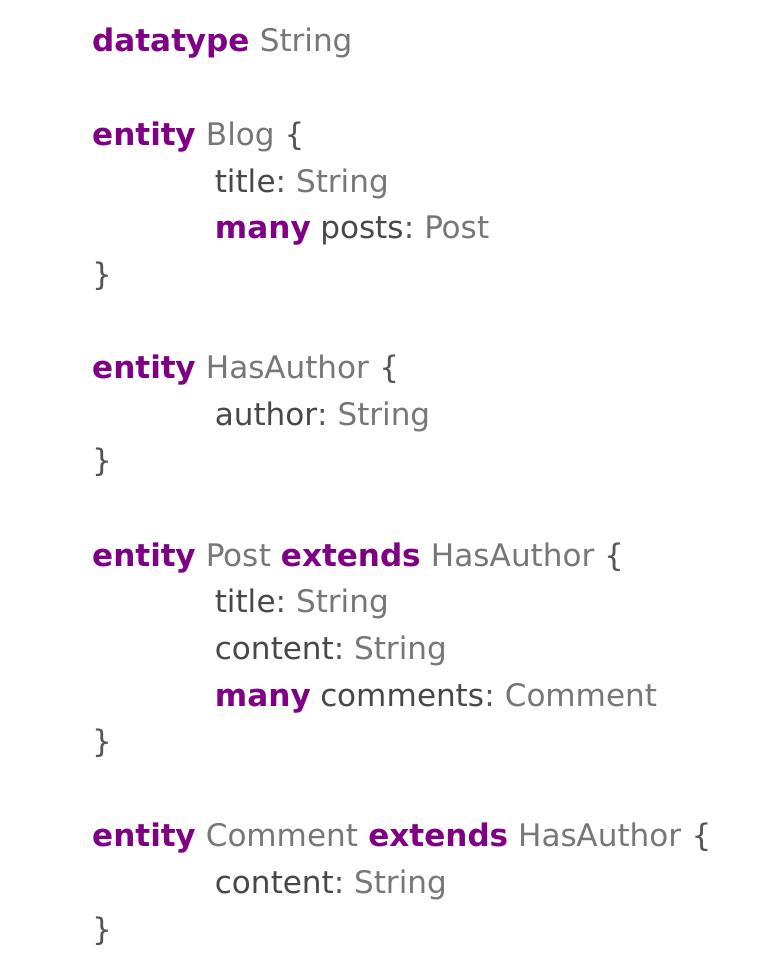Kreiranje projekta
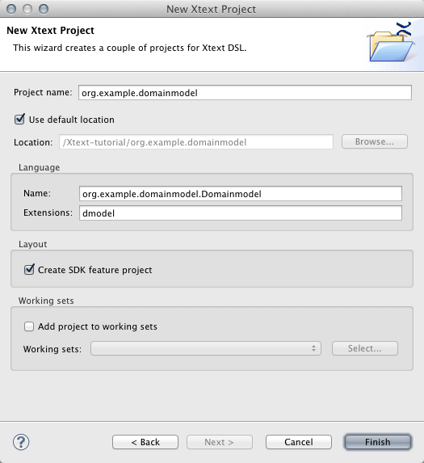Inicijalno stanje projekta

Definisanje gramatike
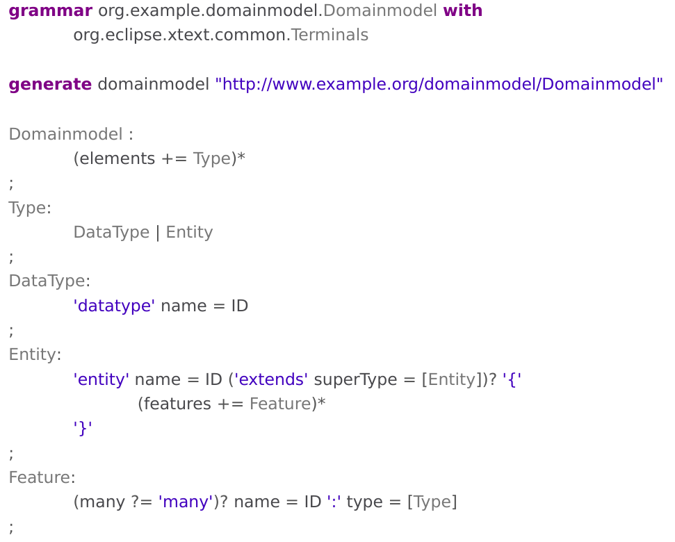Generisanje jezičke infrastrukture
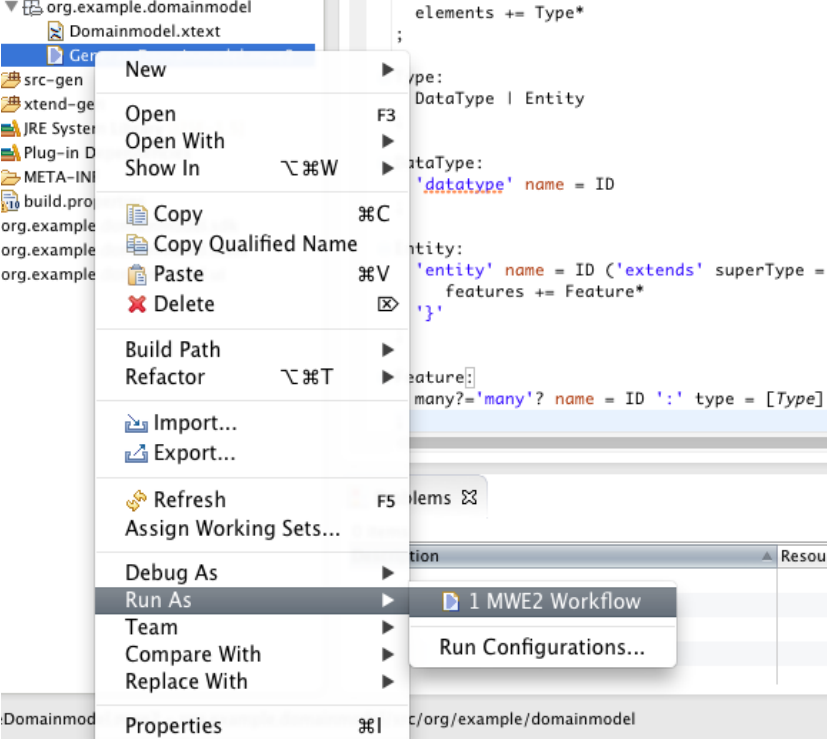Generisanje jezičke infrastrukture
- Na osnovu gramatike jezika biće izgenerisana jezička infrastruktura u obliku 4 eclipse priključka.
- Infrastruktura se dalje može prilagođavati iako je funkcionalna i u inicijalnoj fazi.
Pokretanje editora (nove Eclipse instance)
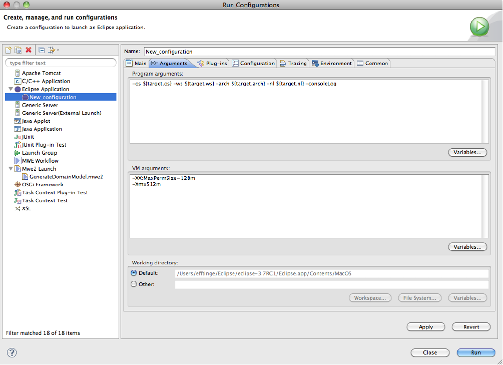Entity-Relationship u radu
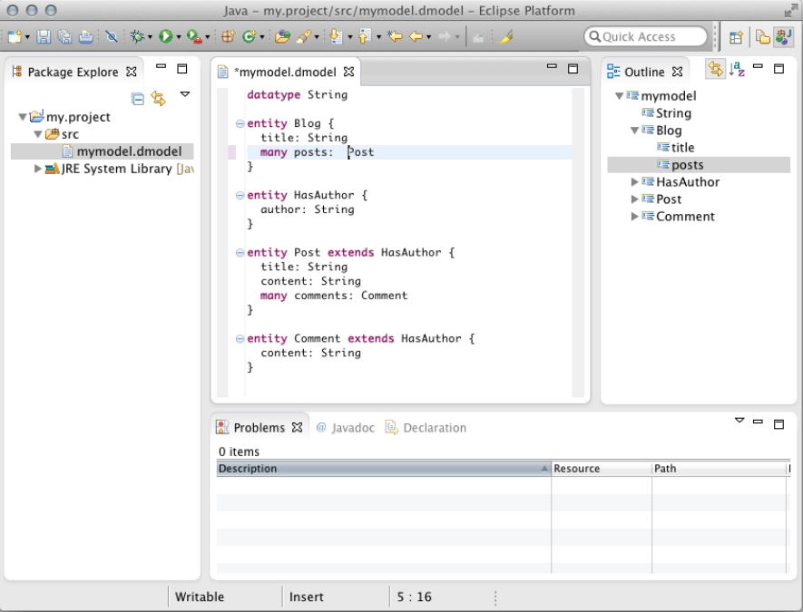Proširenje jezika - dodavanje paketa
- Prikazani jezik je potpun, jednostavan i koristan.
- DSL je dalje potrebno postepeno dorađivati.
- U nastavku je prikazano proširenje jezika koje uvodi koncept paketa u cilju bolje organizacije izvornog koda i razbijanja koda u više fajlova.
Entity-Relationship sa paketima
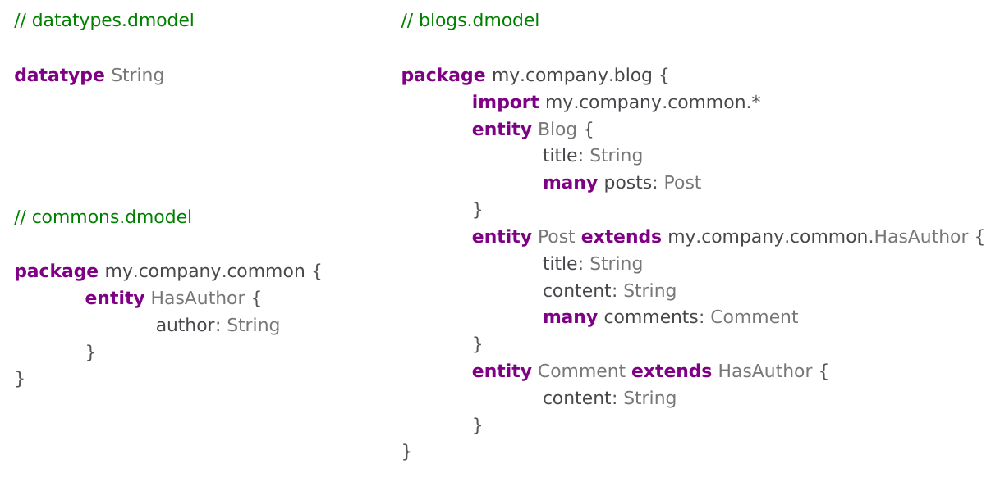Proširenje gramatike - korak 1
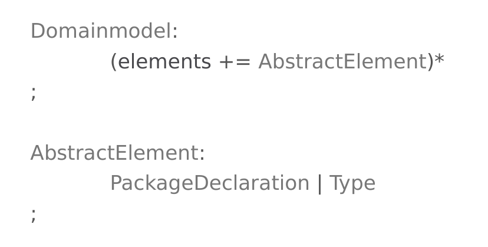Proširenje gramatike - korak 2

Proširenje gramatike - korak 3
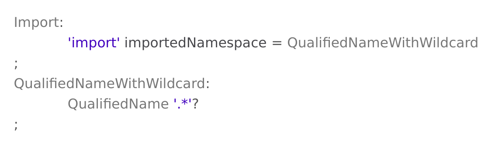Proširenje gramatike - korak 4
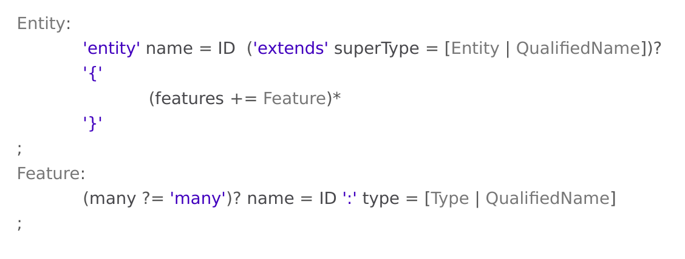ER podrška za pakete u radu
Posle ponovnog generisanja jezičke infrastrukture (priključaka) dobija se sledeći rezultat
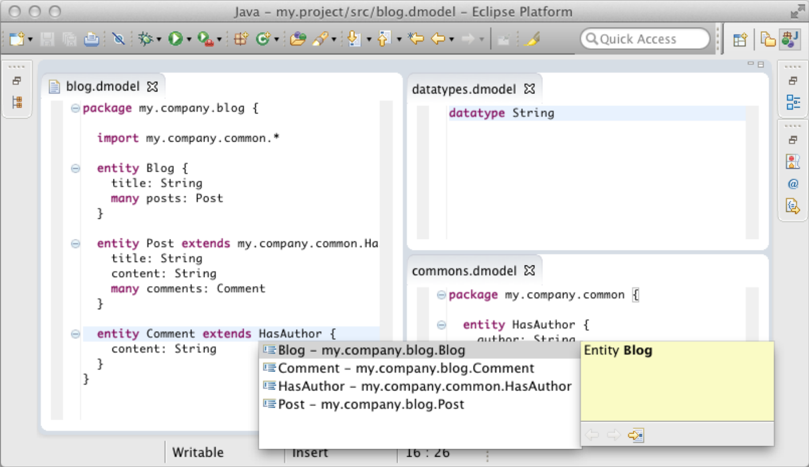Xtend
Šta je Xtend?
- Xtend je statički jezik opšte namene izrađen u Xtext-u koji se koristi u Xtext okviru za razne namene.
- Koristi se između ostalog i za generisanje koda.
Xtend primer
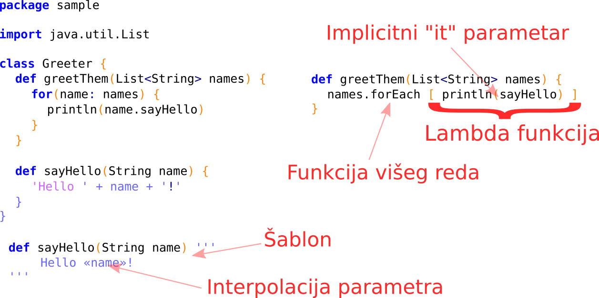Ekstenzije
- Mehanizam proširenja objekata novim metodama bez nasleđivanja.
Ekstenzije - umetanje zavisnosti
- Xtext i Xtend intenzivno koriste Google Guice kao okvir za umetanje zavisnosti (Dependency Injection).